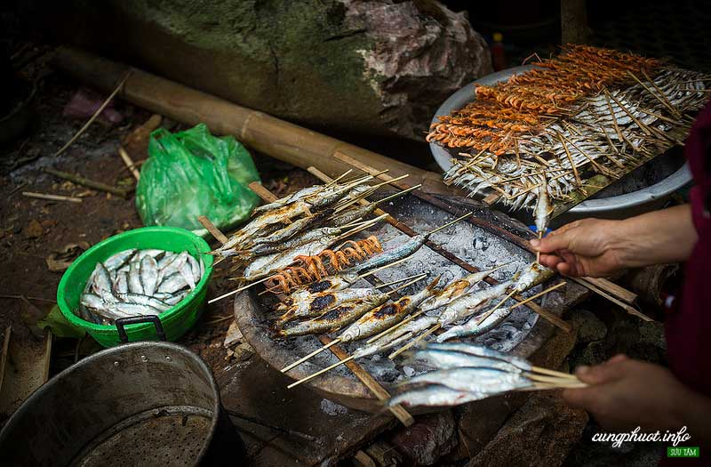
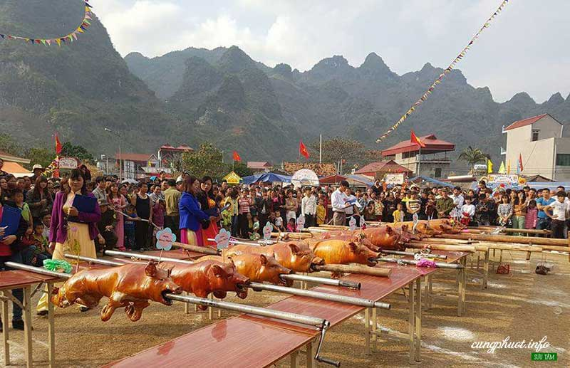
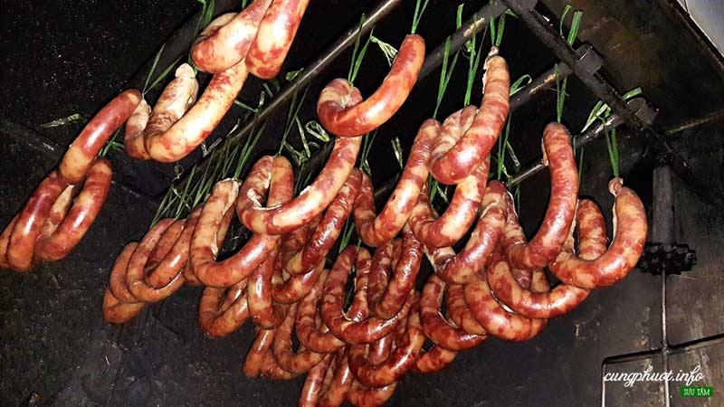
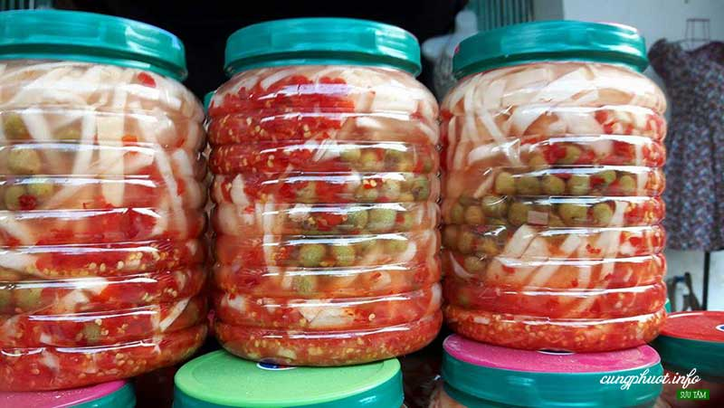
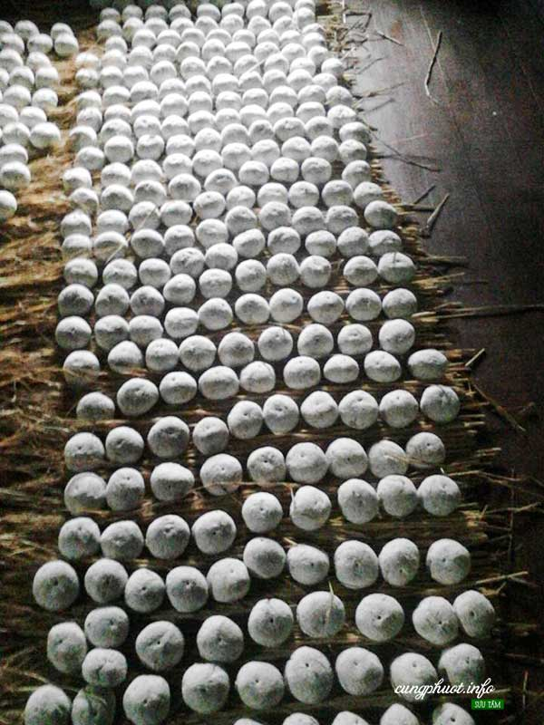
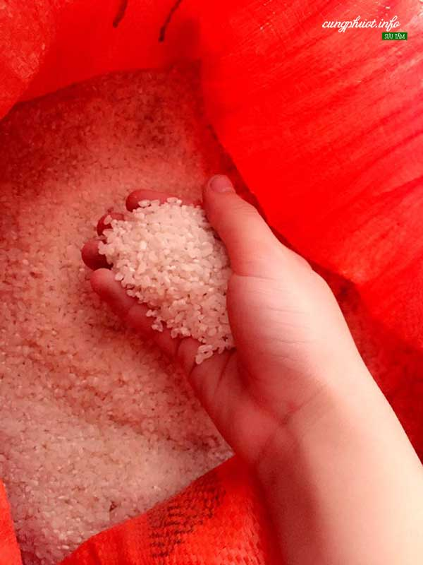

Cùng Phượt – Đến với Bắc Kạn, du khách không những có cơ hội tham quan khung cảnh thiên nhiên tuyệt đẹp mà còn được thưởng thức các loại đặc sản mang đậm bản sắc của đồng bào dân tộc nơi đây. Sẽ rất thú vị nếu sau một chặng đường dài tham quan các di tích, danh lam thắng cảnh, các điểm đến ý nghĩa, tìm hiểu về truyền thống lịch sử, văn hóa, được nghe giới thiệu về các món ăn, đồ uống đặc sản quê hương Bắc Kạn. Trong mỗi món ăn, đặc sản ấy còn ẩn chứa những nét văn hóa đặc trưng, phong tục tập quán, là tính cách, là hương vị, là thành quả của cả một quá trình lao động sản xuất sáng tạo và những tri thức dân gian quý báu được người dân Bắc Kạn gìn giữ, bảo tồn và duy trì từ bao đời nay.
Cá nướng Pắc Ngòi
Cá trong hồ Ba Bể có rất nhiều, thường được người dân đánh bắt thủ công, số lượng cá không nhiều nhưng chất lượng thì thật tuyệt vì thịt cá trắng, chắc và có vị ngọt. Người ta chọn lấy loại cá chỉ nhỏ bằng ngón tay cái, loại cá này vừa giống như cá bống, vừa giống con cá nẹp ở xuôi để làm món cá nướng. Để có được món cá nướng, người dân nơi đây đã phải trải qua một quá trình chế biến cá, dù không khó nhưng lại mất thời gian. Cá tươi sau khi được đánh bắt chọn những con đều nhau, mổ lấy ruột bỏ đi và rửa sạch, sau đó cho vào chõ đồ chín tới. Tiếp đến người ta dùng nẹp tre để tạo thành kẹp, mỗi kẹp chừng 8 – 10 con. Đem những kẹp cá phơi cho khô ngoài nắng. Phơi khoảng 3 – 4 nắng là được. Khi ăn, ta chỉ việc gỡ cá ra khỏi nẹp tre và dùng cồn để nướng (giống như nướng mực), hoặc để cả kẹp cá mang nướng trên bếp than (nướng bằng than cá sẽ ngon hơn). Không cần nướng quá kỹ vì cá đã đồ một lần rồi. Ta chỉ nướng sơ cho cá vừa chín tới. Nướng kỹ quá cá sẽ bị đắng và khô ăn sẽ kém ngon.
Lợn sữa quay
Lợn sau khi chọc tiết thì dùng nước nấu lá ổi để cạo sạch lông, mổ moi và làm sạch trong bụng rồi nhồi vào trọng bụng lợn các nguyên liệu như quả mắc mật, tai hồi, thảo quả, quế chỉ … rồi đem quay trên than hồng. Khi quay thì thường xuyên lấy khăn nhúng nước lau chú lợn để phần da lợn ở ngoài không bị cháy, khi lợn gần chín thì dùng que xăm thủng lợn để nước và mỡ chảy ra. Bỏ lợn ra khoảng 1 tiếng cho bớt nóng và để khi chặt thịt miếng thịt bày ra đĩa không bị nát. Đĩa thịt lợn quay vàng xộm thơm lừng ngon lành đến ứa nước miếng. Cắn miếng thịt quay có vị ngọt của thịt chín tới, vị thơm của lá mác mật, vị ngậy của thịt nướng, miếng thịt được tẩm ướp đậm đà, ăn một lần sẽ nhớ mãi.
Lạp xường Bắc Kạn
Làm lạp xường cũng rất cầu kỳ và công phu. Đầu tiên phải chọn lòng để làm lớp vỏ lạp xường. Lòng non để làm lạp xường phải chọn đoạn lòng đắng vì phần lòng này dai và khá dày, làm lạp xường mới được. Sau khi tuốt rửa sạch lại phải bóc, lột bỏ lớp vỏ ngoài của lòng đi, chỉ lấy lớp màng mỏng bên trong. Việc bóc lòng không khó, chỉ cần khéo léo và nhẹ tay một chút. Lòng bóc xong, thổi hơi vào cho phồng lên, buộc chặt hai đầu, đem hong chỗ thoáng gió. Khoảng một tiếng đồng hồ, bộ lòng se lại, mỏng và dai như ni lông. Thế là được phần vỏ lạp xường.
Măng ớt Bắc Kạn
Măng thái nhỏ, ớt và mắc mật để cả quả, rửa sạch để ráo. Tất cả được ngâm chung với nước muối có độ đậm vừa. Màu trắng của măng xen lẫn với màu đỏ tươi của ớt và màu xanh nâu của mắc mật thơm nồng là món quà thắm đượm hương vị quê nhà mà người dân Bắc Kạn dành làm quà cho người thân và du khách đến thăm quê mình. Măng ngâm ớt thường được dùng cho vào nước chấm và hay ăn kèm với những món ăn chóng ngấy như chân giò hầm, khau nhục…
Rượu men lá Bằng Phúc
Lợn sau khi chọc tiết thì dùng nước nấu lá ổi để cạo sạch lông, mổ moi và làm sạch trong bụng rồi nhồi vào trọng bụng lợn các nguyên liệu như quả mắc mật, tai hồi, thảo quả, quế chỉ … rồi đem quay trên than hồng. Khi quay thì thường xuyên lấy khăn nhúng nước lau chú lợn để phần da lợn ở ngoài không bị cháy, khi lợn gần chín thì dùng que xăm thủng lợn để nước và mỡ chảy ra. Bỏ lợn ra khoảng 1 tiếng cho bớt nóng và để khi chặt thịt miếng thịt bày ra đĩa không bị nát. Đĩa thịt lợn quay vàng xộm thơm lừng ngon lành đến ứa nước miếng. Cắn miếng thịt quay có vị ngọt của thịt chín tới, vị thơm của lá mác mật, vị ngậy của thịt nướng, miếng thịt được tẩm ướp đậm đà, ăn một lần sẽ nhớ mãi.
Gạo bao thai Chợ Đồn
Không chỉ nổi tiếng với những di tích lịch sử và là quê hương giàu truyền thống cách mạng, Chợ Đồn còn được biết đến là một nơi có nhiều loại đặc sản quý do chính người dân nơi đây sản xuất. Nhờ những đặc điểm về khí hậu và chất đất riêng rất phù hợp với giống lúa “bao thai lùn”, sản phẩm gạo Bao thai Chợ Đồn đã trở thành một loại đặc sản mà thiên nhiên ưu ái ban tặng cho vùng đất chiến khu xưa.